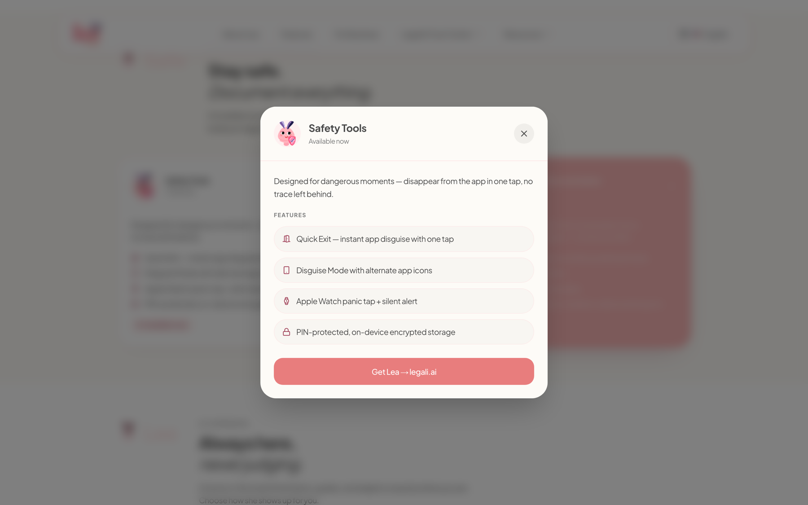
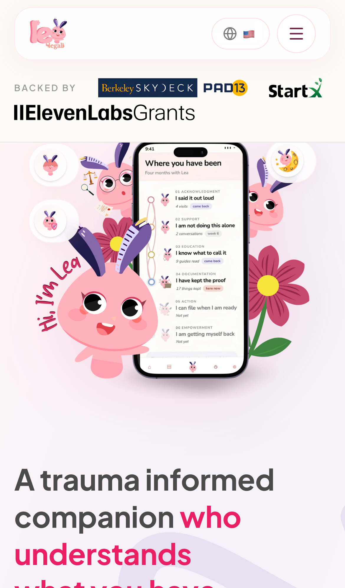
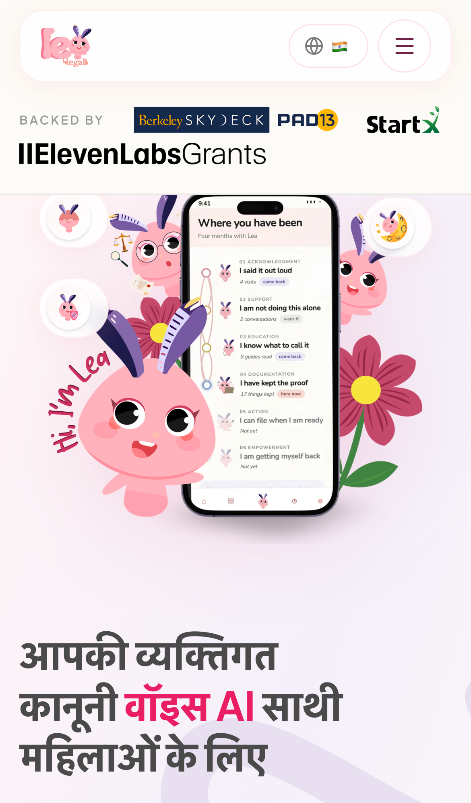
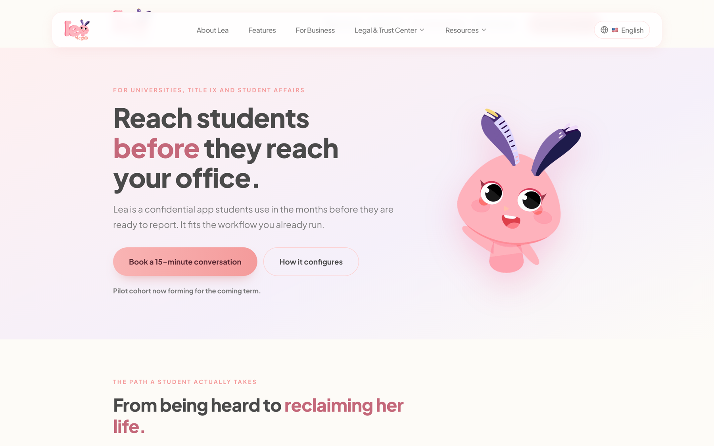
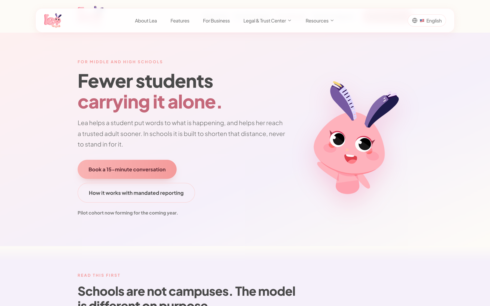
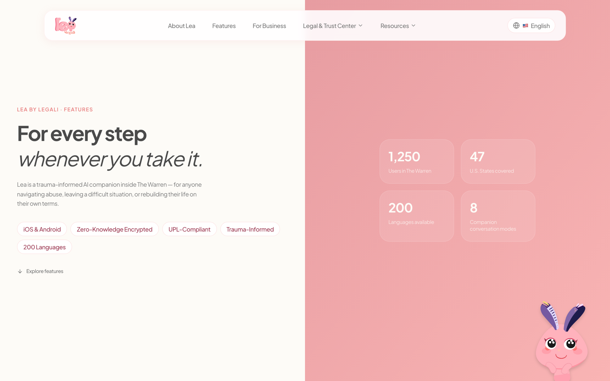

Case Study · Internship
Legali AI
Building a trauma-informed product as a student engineer.
Every screen I built could be seen by someone in an unsafe situation. That changed how I thought about everything: copy, privacy and tone weren’t polish, they were the product.
As a part-time intern at Legali AI, I turned design mockups and product direction for Lea, a trauma-informed AI companion for survivors of abuse, into live, multilingual, accessible web pages.
The problem
Lea supports people navigating abuse, leaving a difficult situation or rebuilding their lives. Many of its users are domestic-violence survivors on shared devices, in a hurry, or under stress.
That shaped three principles I designed around:
- Safety and privacy first. Nothing should expose a user by accident, including what a shared image or link reveals.
- Calm, not clinical. Warm colors, soft type and plain language, so a screen never feels like another form to survive.
- Reachable in the user’s own language. Support that only works in English leaves people out.
My role and constraints
Part-time, remote software engineering intern, about 15 hours a week, across three codebases. I was the engineer closest to the work, and I made many of the small product calls the specs left open.
- Short weekly windows: I picked work I could ship in small pieces.
- Remote and async: feedback came through review cycles, not hallway conversations.
- Ambiguous specs: requirements came as mockups, prototypes and short messages, with no written design guidelines.
How I worked with design
The visual direction came from the team: a Figma design system, mockups, and review feedback from the design owner. My job was to bring that direction to life faithfully and flag where it broke down.
- Consistent look: I turned Lea’s colors and fonts into reusable building blocks so every page matched.
- Mockups to working pages: I converted static mockups into live components, keeping the originals as the source of truth.
- Small, reviewable changes: I shipped in small pieces and revised copy, spacing and details until the design owner signed off.
I didn’t create the visual system. My contribution was getting it right in the real product, handling the cases the mockups didn’t cover, and making product calls where specs were silent.
Key decisions and tradeoffs
Sharing quiz results without it breaking
The Lea energy quiz sorts users into four “energies” and lets them share a result card. Phones support sharing an image directly; most desktop browsers don’t. So on mobile it opens the share menu, and on desktop it downloads the image. The flow differs slightly by device, but sharing never silently fails.
Pop-ups everyone can use
The features page opens details in pop-up windows. I made sure people using a keyboard or screen reader can always get in and out of them, and that the page behind doesn’t scroll. Calm design isn’t enough if someone gets stuck in a pop-up.

Seven languages from day one
All text lives in separate language files instead of being written directly into pages. It took more work upfront, and it caught real bugs, like a broken Hindi file that would have shown garbled text.


Prototypes first for speed
For the universities, schools and setup pages, I wrapped the team’s existing prototypes into live pages instead of rebuilding them, so they shipped fast and stayed in sync with the design owner’s files.


Fixing the cause, not just the symptom
When test deploys kept failing, I traced it to a missing configuration setting so the team could fix the root cause instead of re-running builds.
What shipped
- Lea energy quiz: an interactive quiz with four question types, four result “energies,” and a share flow
- Features page: nine feature sections and six roadmap cards, with accessible detail pop-ups
- 7-language support: across the platform, including fixing a broken Hindi file

Plus three institutional pages (universities, schools, setup) and a landing page refresh.
Reflections
- Constraints sharpen judgment. Short weekly windows pushed me to ship small, reviewable pieces instead of big rewrites.
- Implementation is product work. Details like share fallbacks, keyboard access and missing translations decide whether a design works for real people.
- Say what you own. The design system was the team’s. My impact was getting it right, moving fast and catching what the mockups missed.
What I’d do next
Add analytics to see which quiz result gets shared most, test the share flow with real survivors through a partner organization, and write down the design guidelines that currently only live in review comments.